| 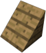 Roof Tile |
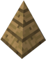 Outer Corner |
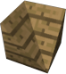 Inner Corner |
These are the three basic blocks for building gabled and hip roofs. |
|
| 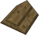 Gabled Ridge |
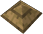 Hip Ridge |
Ridges
and valleys are useful for roof structures that span an odd number of
blocks. They are "smart" blocks that will automatically connect to
adjacent ridge or valley blocks as appropriate. A ridge will also connect to the sloping
face of a plain Roof Tile, and a valley will cut through the back of a
Roof Tile or Inner Corner (hard to describe, see examples below). The "gabled" versions of these blocks always have vertical faces on two ends and auto-connect on the other two sides, whereas the "hip" versions auto-connect on all four sides. |
||
| 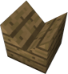 Gabled Valley |
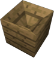 Hip Valley |
| 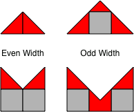 | 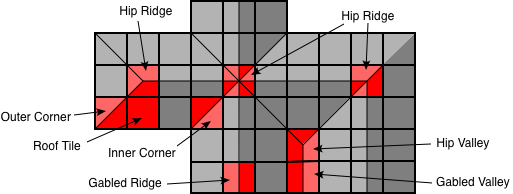 | |
| Using ridges and valleys to fill in odd-sized roof structures. |
Usages of the various roof block types, showing some of the possible configurations that ridge and valley blocks can adopt. |
| 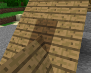 | 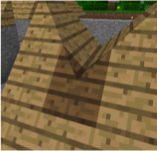 | 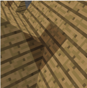 | |
| Connection between a ridge or valley and a sloping face. The dark wood block in each of these is a plain Roof Tile that has adapted itself to the adjacent blocks. |
The dark wood block here is an Inner Corner that is connecting to a valley block behind it. |
||